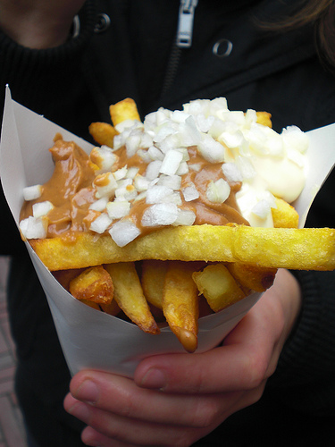

Patatje Oorlog
Ingredienten
Voor een Chantal
- Aardappel
- Zout
- Mayo
- Pindasaus
- Ui
Benodigheden
- Frituurpan
- Frituurvet
- Puntzakje
Hoe doen we dat?
- Zorg dat er schoon frituurvet in de frituurpan zit.
- Laat de frituurpan opwarmen tot 175 graden.
- Was de aardappelen en schil deze. Dit hoeft niet perse sommige mensen vinden patat lekkerder als de schil er nog op zit. Snij de aardappels vervolgens tot reepjes.
- Snij de ui in kleine blokjes. Hoeveel ui er gebruikt gaat worden is aan u zelf.
- Gooi de reepjes aardappel in de opgewarmde frituurpan. laat deze 4 min frituren tot ze goudbruin zien.
- Ondertussen kunt u de kant en klare pindasaus in de magnetron zetten en 2min opwarmen. U kunt deze ook opwarmen in een pan zorg hierbij dat er goed door geroerd wordt.
- Gooi de vers gefrituurde aardappel reepjes in een kom met keuken papier zodat deze het meeste vet kan opnemen.
- Doe deze vervolgens in de puntzak
- Als laatste doet u daar de pindasaus, mayo en de uitjes op
En aanvallen maar!!! mjam mjam